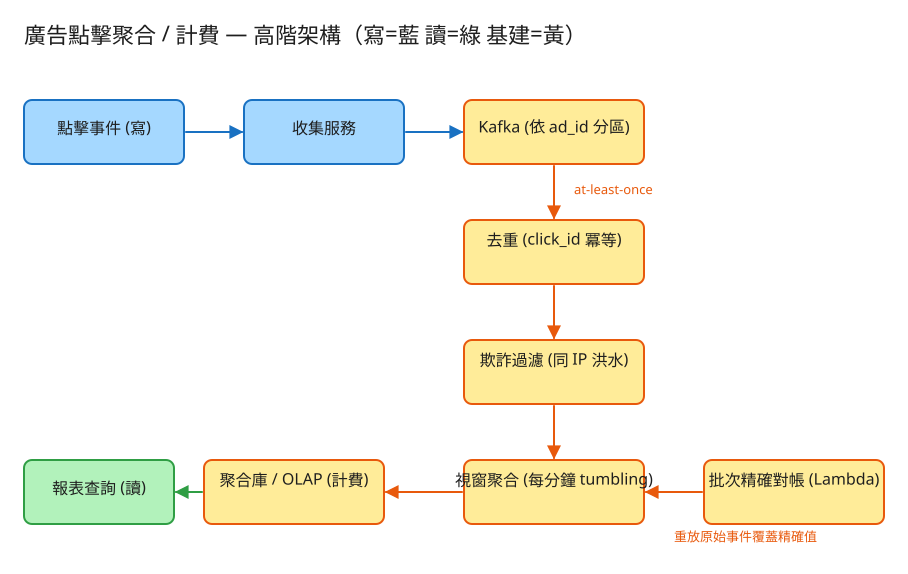

D 串流計算/儲存分發 看故事就懂 輕鬆讀 25 分鐘
想像你開了一間停車場。每台車進來都要在閘口抽一張票，月底你照「進場次數」跟客戶收停車費。 廣告點擊聚合就是這件事的網路版：每支廣告被點一下，就像一台車進場；系統要算每支廣告被點了幾次， 然後照次數跟廣告主結帳收錢。
聽起來不就是「數數字」嗎？難就難在——這個數字直接等於錢。多算一下，廣告主被多扣錢、會翻臉； 少算一下，平台自己虧。而且每天有幾十億次點擊湧進來，還有人專門派機器人來亂點。
很多人第一個反應是：「不就是 COUNT(*) 加一加？」這題真正的陷阱在一個你生活裡也遇過的問題——
網路傳訊息也一樣：為了「保證不漏掉」，系統寧可同一筆點擊送個兩三次（這叫「至少送一次」）。 問題是——同一次真實點擊，絕對不能算兩次錢。所以系統得有辦法認出「這封信我收過了」，重複的就丟掉。
再加上第二個麻煩：有人會派機器人狂點別人的廣告，把對手的廣告預算燒光。這種點擊雖然是「真的有人（機器）點了」， 但不能算錢。所以系統還要會「看點擊的行為，判斷哪些是作弊的」。
💭 停一下：「同一封信收兩次」跟「機器人狂點」，這兩個問題能用同一招解決嗎？
別被「串流系統」嚇到。整件事其實就是讓每一筆點擊闖 4 關，一關一關來：
使用者點一下廣告，系統要馬上接住、立刻放行，不能讓使用者卡在那邊等「結算完成」。
所以收點擊的服務只做一件事：把點擊丟進一條「待處理輸送帶」就回「收到」。這條輸送帶（叫 Kafka）能先把暴衝的車流囤著，後面慢慢處理。
輸送帶上難免有重複的點擊（同一封信寄了兩三次）。這一關要把重複的挑掉。
系統一樣：每筆點擊在發生的當下就帶一個獨一無二的編號（叫 click_id）。去重關有一本「看過的編號」名單，重複的就丟掉。 這樣不管同一筆點擊被送來幾次，都只算一次——這就是花大力氣要做到的「exactly-once（剛好一次）」。
⚠️ 小細節：那本「看過的編號」名單不能無限長（會撐爆記憶體），所以只記最近一段時間（例如最近幾小時），過期就清掉。
剩下的點擊雖然都「不重複」了，但裡面藏著機器人狂點的假流量，不能拿去收錢。
記住：去重 ≠ 防作弊。去重是擋「一模一樣的重複」；防作弊是擋「看起來很多筆、但行為很可疑」的點擊。兩件不同的事，所以是兩關。
剩下的就是「乾淨、可收錢」的點擊了。最後一關：把它們按時間分段加總。
於是系統就能回答：「廣告 A 在 14:00～15:00 這段被點了 1832 次」。這些分段數字加起來，就是要跟廣告主收的錢。
工程上的「取捨」聽起來很抽象。換個方式記：這個系統最怕三件事，每個設計都是為了避開某個「怕」。

✏️ 用 Excalidraw 開啟編輯（diagram.excalidraw）白話導讀，由左到右一路看：
看完上面，這些詞你其實都已經懂了，這裡只是把「工程術語 ↔ 白話」對起來，Part 2 會用到：
| 工程術語 | 白話解釋 |
|---|---|
| click_id | 每筆點擊的「票號」，獨一無二，用來認出重複 |
| 去重 / exactly-once | 同一張票只准進場一次，同一筆點擊只算一次錢 |
| at-least-once | 「至少送一次」：傳輸寧可重送也不漏送 |
| 反欺詐 / 防作弊 | 看行為，把機器人灌的假點擊踢出帳單 |
| tumbling window（翻滾視窗） | 每小時結算一次帳：把時間切成不重疊的整段 |
| sliding window（滑動視窗） | 「近 5 分鐘平均」那種會重疊的段，適合做監控不適合算錢 |
| event-time（事件時間） | 按「點擊真正發生的時刻」算帳，不是按「伺服器收到的時刻」 |
| watermark（水位線） | 一個「這段時間的點擊應該都到齊了」的信號，到了才結算 |
| Kafka（輸送帶） | 暴衝的點擊先囤在這條輸送帶上，後面慢慢處理（削峰） |
| OLAP（報表庫） | 專門存「算好的統計數字」、給報表快速查的資料庫 |
| TTL | 「保存期限」：名單只留最近一段時間，過期自動清掉 |
| 對帳 / Lambda 雙層 | 即時先給個近似數字，日終再重算一次校到精確 |
我們估幾個關鍵數字（數字不必背，重點是感受它的「形狀」）：
| 估什麼 | 大概數字 | 所以呢？ |
|---|---|---|
| 每天多少次點擊 | 50 億次／天 ≈ 每秒 5.8 萬筆（暴衝時 ×5） | 不可能逐筆慢慢寫進傳統資料庫，要用輸送帶削峰 |
| 原始點擊資料多大 | 每筆約 200 bytes → 一天約 1 TB | 原始事件存便宜的倉庫，只把「算好的數字」放報表庫 |
| 「看過的票號」名單多大 | 留 1 小時 ≈ 2 億筆 ≈ 3.2 GB | 會一直長大 → 一定要設保存期限（TTL），過期清掉 |
| 結算結果多少 | 1000 萬支廣告 × 每分鐘一格 → 一天上百億列 | 要用「壓縮得很好的報表庫（OLAP）」存 |
💭 停一下：那本「看過的票號」名單，為什麼不能永遠留著？只留最近幾小時會不會出錯？
這題只要記住三張「點餐單」：
① 上報一筆點擊（最高頻）
POST /clicks
給我：{ 票號 click_id, 廣告 ad_id, 是誰 user_id, 從哪 ip, 點擊時間 ts }
我回：202「收到了！」← 立刻回，不讓你等結算為什麼「立刻回 202」？因為點擊的人不該卡著等我們去重、防作弊、結算。先收下、丟上輸送帶，後面慢慢處理。 注意票號(click_id)是「點擊發生的當下」就由前端產生——這樣同一筆點擊不管被重送幾次都帶同一個票號，去重才認得出來。
② 查某支廣告分時段的點擊數（給報表用）
GET /ads/{ad_id}/clicks?from=...&to=...&granularity=1m
我回：{ 每分鐘一格的可計費點擊數, 總計 }這是「讀」的點餐單，直接從算好的報表庫撈，所以很快（不必當場去翻幾十億筆原始點擊）。
③ 查廣告主的帳單（即時近似 vs 對帳後精確）
GET /advertisers/{id}/billing?date=2026-05-31
我回：{ 即時近似金額, 對帳後精確金額 }會給兩個數字：即時近似（馬上看得到，可能差一點點）和對帳後精確（日終重算過、可拿去真正收錢）。
記「最近哪些 click_id 已經算過了」。鑰匙就是票號本身，看到重複的就丟。
這本只留最近幾小時（設 TTL），不然會無限長大。
記「每個 IP / 裝置最近這陣子點了幾下」。用來抓「短時間爆量」的機器人。一樣只看近期一小段時間。
記 (廣告 ad_id, 哪個時段 window_start) → 這段算了幾次可計費點擊。
這就是最後拿去收錢的帳本，要長期保存，放進壓縮得很好的報表庫（OLAP）。
| 哪裡會塞車 | 怎麼拓寬 |
|---|---|
| 點擊暴衝，一台機器收不下 | 收集服務不存任何狀態，多開幾台＋輸送帶(Kafka)先囤著削峰 |
| 「看過的票號」名單越長越大 | 設保存期限(TTL)過期清掉＋按票號切成好幾份分開存 |
| 所有廣告都擠同一個結算器 | 輸送帶按廣告分流，同一支廣告固定走同一個結算器，各算各的 |
| 有「超熱門廣告」獨自塞爆一台 | 把熱門廣告再拆成好幾股分頭算，最後合併 |
| 報表查詢量太大打爆結算器 | 把算好的數字放進報表庫(OLAP)＋快取熱門廣告，查詢不碰原始資料 |
| 即時數字跟真實值有一點點誤差 | 日終重放原始點擊重算一次（對帳），把帳校到精確 |
「Part 1 的三個怕」是核心取捨。這裡補幾個常被面試官追問的：
讀十遍不如玩一遍。這題有一個真的可以跑的小程式，讓你親眼看到「去重 → 防作弊 → 結算」這條漏斗：
# 啟動（在這題的 demo 資料夾裡）
cd demo
php -S localhost:8022 -t public
# 然後瀏覽器打開 http://localhost:8022玩過 demo 了，來掀開引擎蓋看看「那條漏斗到底是哪幾段程式做的」。 好消息：核心只有三個小檔，剛好對應前面講的三件大事。不用會 PHP，我把程式翻成白話、只留關鍵那幾行，看註解就懂。
第一關，先問一句「這張票我收過了嗎？」。手上有一本「已進場名單」（看過的票號），重複的直接擋掉。
function 收下(點擊) {
票號 = 點擊.click_id
if (看過名單 裡已經有 票號)
return 丟掉; // ← 重複的票 → 擋下，不重複計費
看過名單[票號] = true // 首次出現才記下來、放行
return 接受;
}就這一句 if，把上游「寧可重送也不漏送」造成的重複擋在門外。不管同一筆點擊被送來幾次，只有第一次會過——這就是把「至少一次」收斂成 exactly-once（剛好一次計費）。對應前面「演唱會驗票」那個比喻。
💭 停一下：那本「看過名單」如果永遠留著，會出什麼問題？
過了去重的點擊都「不重複」了，但裡面藏著機器人狂點。這一關看行為：同一個 IP 在一小段時間內點太多下，就判作弊。
function 是不是正常的(點擊) {
近期 = 這個 IP 在「最近 10 秒」內的點擊（舊的丟掉） // ← 滑動視窗
if (近期筆數 >= 門檻 5)
return 作弊; // ← 短時間爆量 → 剔除，不計費
記下這次點擊時間
return 正常;
}注意：這裡的「最近 10 秒」是會跟著時間往前滑的滑動視窗（拿來抓行為，不是拿來算錢）。一旦同 IP 在窗內達門檻就剔除。對應「店員看出來這人一分鐘衝進來 300 次」的比喻。去重 ≠ 防作弊：去重擋一模一樣的票號，這關擋的是票號各不相同、但行為很可疑的洪水點擊。
最後剩下「乾淨、可收錢」的點擊。這關把它們按時間分段加起來。關鍵就一行：算出這筆點擊屬於哪一段。
function 歸到哪一段(點擊時間 ts) {
return (ts ÷ 視窗長度) 取整 × 視窗長度 // 例：視窗 60 秒，ts=14:00:37 → 落到 14:00:00 那段
}
function 累加(點擊) {
這一段 = 歸到哪一段(點擊.ts)
帳本[廣告][這一段] += 1 // ← 同段同廣告，累加成一個數字
}這就是 tumbling window（翻滾視窗）：時間被切成固定長度、不重疊的整段，一筆點擊只會落進它發生的那一段（對應「每小時清點一次收銀機」）。而且是用事件時間（點擊真正發生的 ts）歸段，所以就算事件亂序、晚到，也會落到正確的那一段。
| 關卡（前面講的） | 哪個檔 | 關鍵那段 |
|---|---|---|
| ② 去重（exactly-once） | ClickIngest | 收下() 裡「看過名單」的 if |
| ③ 防作弊 | FraudFilter | 是不是正常的() 的爆量門檻 |
| ④ 分段結算 | Aggregator | 歸到哪一段() 的取整公式 |
👉 重點：真實系統會把「記憶體名單 + 迴圈」換成 Kafka（輸送帶）+ Flink（串流引擎，含 keyed-state / watermark）+ Redis/RocksDB（去重狀態）+ ClickHouse（報表庫）， 但上面這三段判斷邏輯一字都不用改：去重還是「看過就丟」、防作弊還是「窗內爆量就踢」、結算還是「ts 取整歸段累加」。所以讀懂這個小 demo，你就讀懂了這題的核心。
先不要看答案，自己用講給朋友聽的方式回答看看（講得出來才是真的懂）：
廣告點擊聚合 = 一台超精準、防作弊的點擊收費機。
4 個關卡：① 收下點擊立刻放行 → ② 去重（重複票擋掉，做到 exactly-once）→ ③ 防作弊（機器人灌的不算）→ ④ 分段結算（每小時一筆帳，tumbling window）。
3 個怕：怕算錯錢（同一筆絕不算兩次）、怕漏掉點擊（寧可重送＋去重）、怕被作弊洗錢（假流量踢出帳單）。
工程細節一句話：先估「高速公路尖峰」般的暴衝 → 收到先回 202、票號上游產生 → 三本本子（看過的票號短命／IP 紀錄短命／結算帳本長存）＋名單設 TTL → 即時出近似、日終重算對帳到精確。
想看更精簡、面試速查用的版本？👉 前往完整版（同樣內容的工程速查格式）。